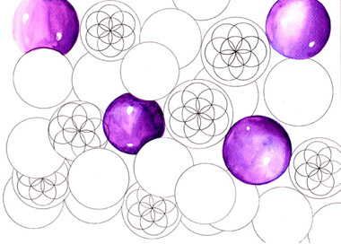

Εικόνα με ανοιχτά μάτια. Ο χώρος του δωματίου γεμίζει από λευκές μπάλες με περιγράμματα και διαφάνεια. Πάλλονται διαρκώς. Μέσα σε κάθε μεγάλη μπάλα υπάρχουν επτά μικρότερες, που πάλλονται κι αυτές, με μεγάλη ταχύτητα. Όλα είναι ζωντανά! Οι μπλε-μωβ μπάλες είναι «γεμάτες», γυαλιστερές και δεσπόζουν στο χώρο ή πιο σωστά στο πεδίο, που επίσης πάλλεται μαζί τους.
|
 |
Απόλυτα γεωμετρικό σχήμα. Απέραντη ομορφιά. Ο χρόνος έχει σταματήσει. Μπορώ να κάθομαι «εδώ» αιωνίως, όπου δεν υπάρχει χώρος ούτε χρόνος. |
|
Το σχήμα που βλέπω είναι ακριβώς το ίδιο με ένα από αυτά που εικονίζονται στο βιβλίο που έφτασε στα χέρια μου λίγο μετά τη θέαση των σφαιρών αυτών. Το παραθέτω αριστερά. Γεωμετρικά σχήματα έχουν εμφανιστεί σε αγρούς της Αγγλίας και με αφορμή αυτά μίλησε ο Διδάσκαλος Γιόνα στον Χάσκα Χάρισον. Τα μηνύματά του παρουσιάστηκαν από την Ιωάννα Γκολφινοπούλου στο βιβλίο «Η Προφητεία από το Μπλε Φως».
|
Οι συμπτώσεις ολοένα πυκνώνουν προς αποκαλύψεις πολύ σημαντικές και θεραπευτικές: ξαναβρήκα το ίδιο σχήμα στο βιβλίο του Λίντμπιτερ με τίτλο «Τσάκρα, οι Πύλες της Ψυχής στους Αόρατους Κόσμους». Εκεί, έχει ζωγραφίσει αυτό που έβλεπε να υπάρχει παντού στο χώρο και περιγράφει λεκτικά την κίνηση που κάνει, η οποία αποκαλείται ιδιοστροφορμή στη Φυσική Επιστήμη. |
Αυτό που βλέπουμε δεξιά είναι η απεικόνιση του σφαιριδίου της ζωτικότητας: ένας κύκλος που εμπεριέχει επτά κύκλους μέσα του, σε απόλυτα γεωμετρική διάταξη.
Το σχήμα που βλέπω είναι κύκλοι που έχουν ο καθένας επτά κύκλους μέσα τους. Ένα από τα σχήματα στους αγρούς της Αγγλίας είναι ένας κύκλος με επτά κύκλους μέσα του. Έχω την αίσθηση ότι όλα αυτά συνδέονται. |
|
Στην εικονογραφημένη έκδοση του βιβλίου του σύγχρονού μας φυσικού επιστήμονα Στίβεν Χώκινγκ «Το χρονικό του χρόνου», διαβάζω στο κεφάλαιο «Η ενοποίηση των φυσικών θεωριών», για τα υπερσωματίδια και τις κινήσεις τους. Απεικονίζονται ως σφαιρίδια κι η κίνησή τους, η ιδιοστροφορμή (spin), είναι ίδια με την κίνηση που βλέπω. Μόνο με πολύ ειδικές συνθήκες τα υπερσωματίδια είναι ορατά και σίγουρα όχι με τα ισχυρά μικροσκόπια σε κανονικές συνθήκες, γιατί διαχέονται.
Στη χώρα μας, στην Πύλο της Μεσσηνίας, όπου βρίσκεται το βαθύτερο σημείο της Μεσογείου, διεξάγεται ένα παγκόσμια μοναδικό πείραμα: μόνο σ' εκείνο το βάθος μπορεί να μετρηθεί και να εξεταστεί η συμπεριφορά των νετρίνων (σωματίδια που διαπερνούν την ύλη κι έχουν βρεθεί παντού στο σύμπαν), γιατί πάνω στην επιφάνεια της Γης η παρουσία άλλων κοσμικών ακτινοβολιών εμποδίζει την ανίχνευσή τους. Μήπως από την Πύλο, εκεί από τα 4.000 μέτρα υπό την θάλασσα, από το πείραμα που πήρε την ονομασία «βασιλιάς Νέστωρ», έρθει η τελική απάντηση για την ενοποίηση όλων των φυσικών θεωριών, όλης της γνώσης; Η Γνώση περιμένει να την ανακαλύψουμε.
Σχολιάζει στο σχετικό άρθρο για το πείραμα της Πύλου ο σύγχρονός μας φυσικός επιστήμων Γιώργος Γραμματικάκης «... Αν, όπως λένε τα βιβλία, ο βασιλιάς Νέστωρ ήταν σοφός, και αν η ψυχή του σήμερα ταξιδεύει, θα αγαλλιά ασφαλώς από αυτή τη σπάνια συνομιλία του μύθου και της επιστήμης, του παρελθόντος και του μέλλοντος, που φέρει το όνομά του.»
Η «συνομιλία του μύθου και της επιστήμης» θα μας οδηγήσει στην Αλήθεια, γιατί ο μύθος είναι η αλήθεια ειπωμένη με τα λόγια μιας άλλης εποχής.
|
|
{kind=link}
{kind=link}
{kind=link}